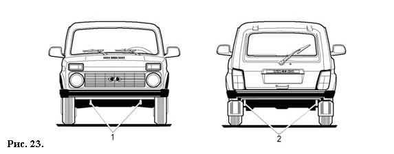
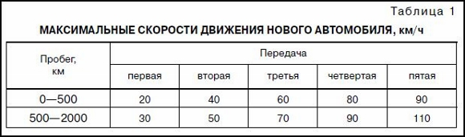

ЭКСПЛУАТАЦИЯ АВТОМОБИЛЯ
 БУКСИРОВКА АВТОМОБИЛЯ
Для буксирования Вашего автомобиля закрепляйте трос только в предназначенных для этой цели передней 1 (рис. 23) или задней 2 проушинах.
Перед буксированием установите ключ в выключателе зажигания в положение 0 и включите световую сигнализацию, согласно Правилам дорожного движения.
При буксировке автомобиля следите за тем, чтобы буксирный трос был постоянно натянут.
Кроме того, имейте в виду, что вакуумный усилитель тормозов выполняет свою функцию только при работающем двигателе.
Поэтому при торможении следует значительно сильнее нажимать на педаль тормоза.
Буксирование автомобиля проводите плавно, без рывков и резких поворотов.
ЭКСПЛУАТАЦИЯ НОВОГО АВТОМОБИЛЯ
Во время пробега первых 2000 км:
1. При движении автомобиля не превышайте скоростей, указанных в таблице 1.
2. Не производите буксировки прицепа и автомобиля без крайней необходимости.
3. Режимы движения — резкое трогание с места, в том числе с включенным ручным тормозом, разворот с пробуксовкой колес при максимальных оборотах двигателя — не допускается, так как это приводит к повреждению дифференциала.
4. Не допускайте работу двигателя в режиме перегрева (порог —115 градусов).
5. До окончания периода приработки тормозных колодок (в течение 3000 км) относительная разность тормозных сил колес задней оси при замере по методике согласно ГОСТ Р 51709-2001 не должна превышать 35%.
Таблица 1
МАКСИМАЛЬНЫЕ СКОРОСТИ ДВИЖЕНИЯ НОВОГО АВТОМОБИЛЯ, км/ч
МЕРЫ ПРЕДОСТОРОЖНОСТИ ПРИ ЭКСПЛУАТАЦИИ АВТОМОБИЛЯ
Автомобиль легок в управлении, обладает высокими динамическими и скоростными качествами на шоссе, а также повышенной проходимостью в условиях размокших грунтовых дорог, песчаной и заснеженной местности.
Тем не менее, следует всегда помнить, что автомобиль не предназначен для постоянной эксплуатации в тяжелых дорожных условиях.
Не превышайте нагрузку автомобиля, указанную в руководстве.
Перегрузка приводит к повреждению элементов передней подвески, к изгибу балки заднего моста, преждевременному износу шин, к вибрации кузова и потере устойчивости автомобиля.
Масса груза с багажником, установленным на крыше автомобиля, не должна превышать 50 кг без превышения полезной нагрузки.
В холодное время года перед включением стеклоочистителей убедитесь в том, что щетки не примерзли к стеклам.
Несоблюдение этой рекомендации может привести не только к поломке щеток, но и к выходу из строя их электроприводов.
Мягкая подвеска автомобиля хорошо поглощает колебания при быстрой езде по неровной дороге. Однако резкие удары могут деформировать оси нижних рычагов и вывести из строя другие детали ходовой части автомобиля.
Поэтому при движении по таким дорогам не развивайте большую скорость.
Для смазки узлов и агрегатов, заправки топливного бака применяйте материалы, рекомендуемые заводом-изготовителем
Не допускайте эксплуатации автомобиля с горящей контрольной лампой недостаточного давления масла.
Никогда не допускайте работы двигателя с частотой вращения коленчатого вала, при которой стрелка тахометра находится в красной зоне шкалы.
Стрелка тахометра в зоне с красной штриховкой сигнализирует о приближении частоты вращения коленчатого вала к максимально допустимой.
Если максимально допустимая частота вращения коленчатого вала двигателя будет превышена, то при достижении 6200 оборотов ЭСУД начнет отключать подачу топлива, могут появиться перебои в работе двигателя и толчки в движении автомобиля.
При снижении частоты вращения подача топлива возобновится.
Эксплуатация шин с давлением, отличающимся от рекомендованного, приводит к их преждевременному износу, а также к ухудшению устойчивости и управляемости автомобиля.
В конструкции автомобиля применены высокоэффективные дисковые передние тормоза. Однако их долговечная работа может быть обеспечена только при надлежащем уходе – не допускайте накапливания засохшей грязи в тормозных механизмах и проводите их промывку после поездок по глубокой грязи.
На автомобиле установлена система зажигания высокой энергии. Поэтому не допускается производить пуск двигателя с помощью искрового зазора, а на работающем двигателе отсоединять высоковольтные провода и проверять цепи высокого напряжения на «искру», так как это может привести к прогару высоковольтных деталей и выходу из строя системы зажигания.